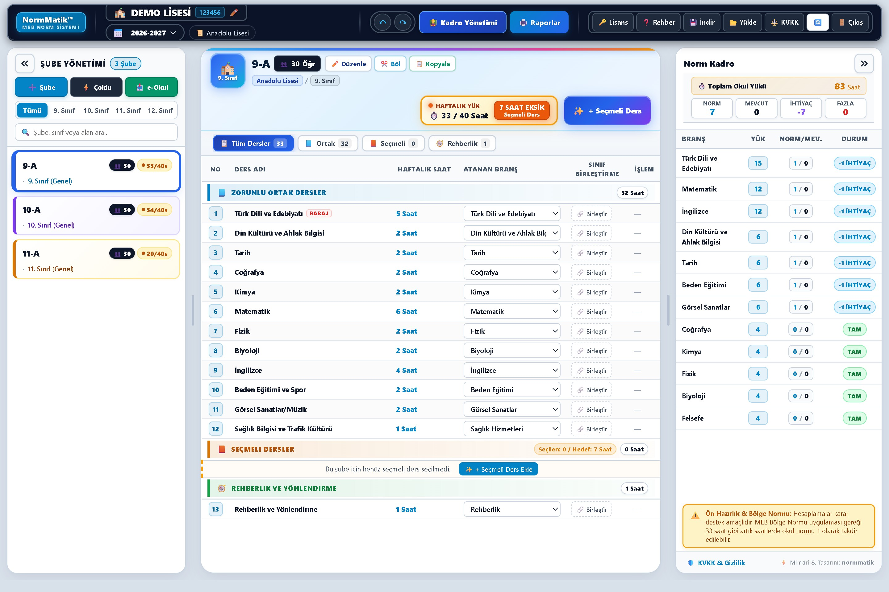
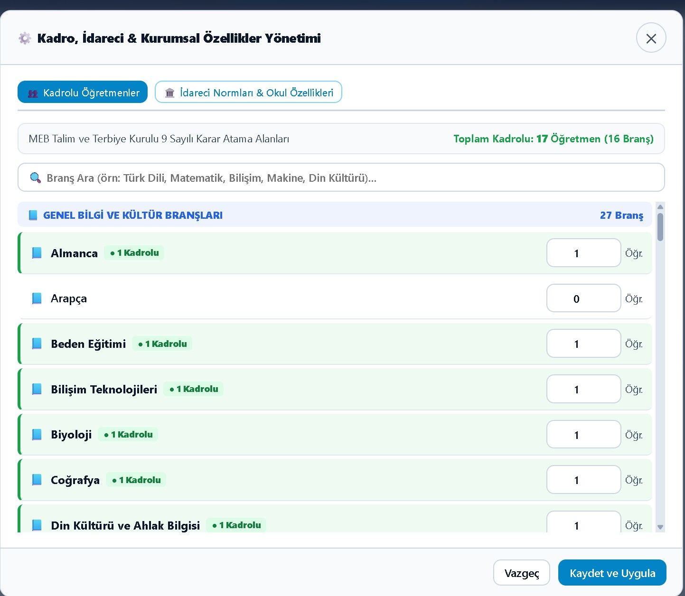
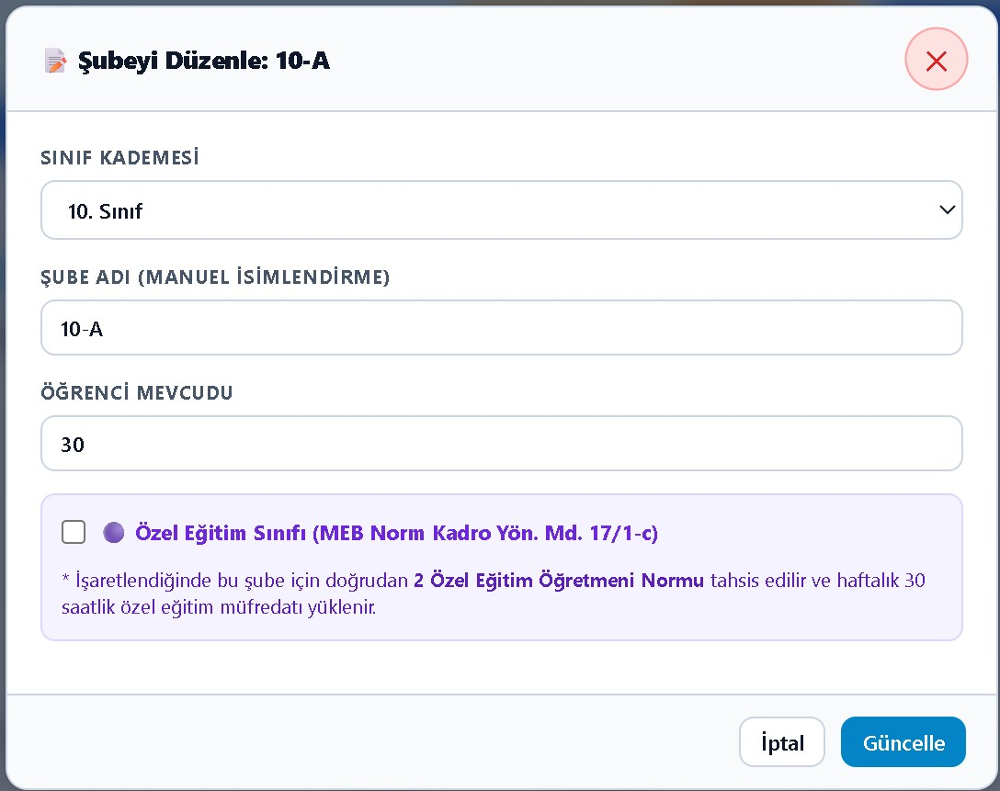
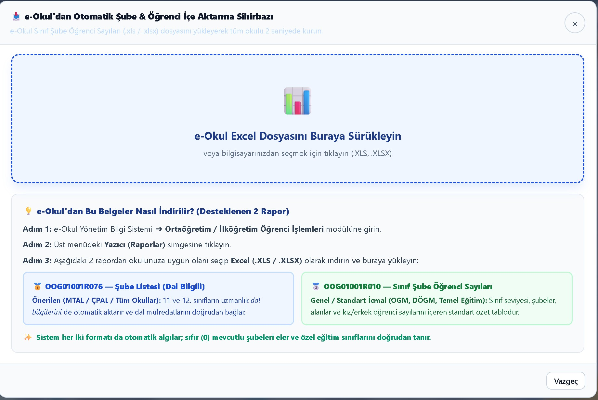
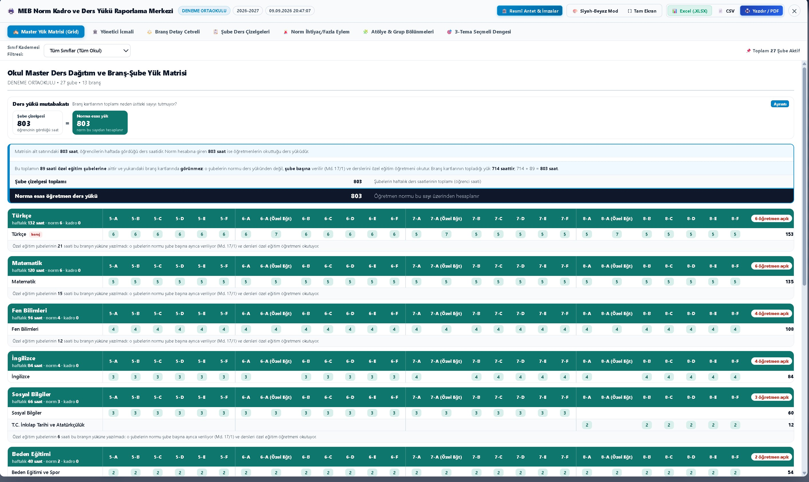
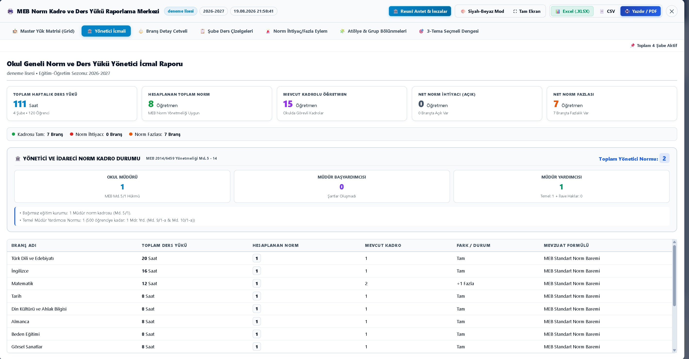

Şubelerinizi girin, haftalık ders yükü ve branş bazlı öğretmen ihtiyacı anında karşınıza çıksın. Hesaplamalar MEB'in yayımladığı çizelgelere ve Norm Kadro Yönetmeliği'ne dayanır.
Demo için kayıt gerekmez. Kurulum yok, tarayıcıdan çalışır.

Büyütmek için tıklayınNorm kadro çalışmasında en çok vakit alan dört işi üstlenir.
Okul türünü ve sınıf seviyesini seçtiğinizde zorunlu dersler ve saatleri kendiliğinden gelir. Elle tablo doldurmazsınız.
Bütün şubelerin ders saatlerini branş branş toplar. Şube birleştirme ve atölye grup bölünmeleri hesaba katılır.
Her branş için norm kadro sayısını hesaplar; mevcut öğretmen sayısını girdiğinizde ihtiyaç ve fazlalığı yan yana görürsünüz.
Yönetici icmali, branş cetveli, şube çizelgesi ve norm eylem raporu. Yazdırılabilir; beş sekmeli Excel olarak da indirilir.
Müdür ve müdür yardımcısı normlarını Madde 5-14'e, rehber öğretmen normunu Madde 21'e göre hesaplar.
Yeni öğretim yılında şubeleri bir üst sınıfa taşır, mezunları arşivler ve yeni çizelgeyi yükler.
Ders çizelgeleri, MEB'in yayımladığı resmî çerçeve programlardan çıkarılmıştır.
Görselin üzerine tıklayarak büyütebilirsiniz.
Şubeler, ders dağıtımı ve norm tablosu aynı ekranda.

Zorunlu ve seçmeli ders havuzları, saat hedefi uyarıları.

Her branşın yükü, normu ve mevcut kadroyla farkı.

Bütün şubelerin ders saatleri tek tabloda.

Kurum bilgileri ve imza bloklarıyla yazdırılabilir çıktı.

Grup bölünmeleri ve seçmeli ders dengesi.
Demo okulda bütün özellikler açıktır. Kayıt istemez.